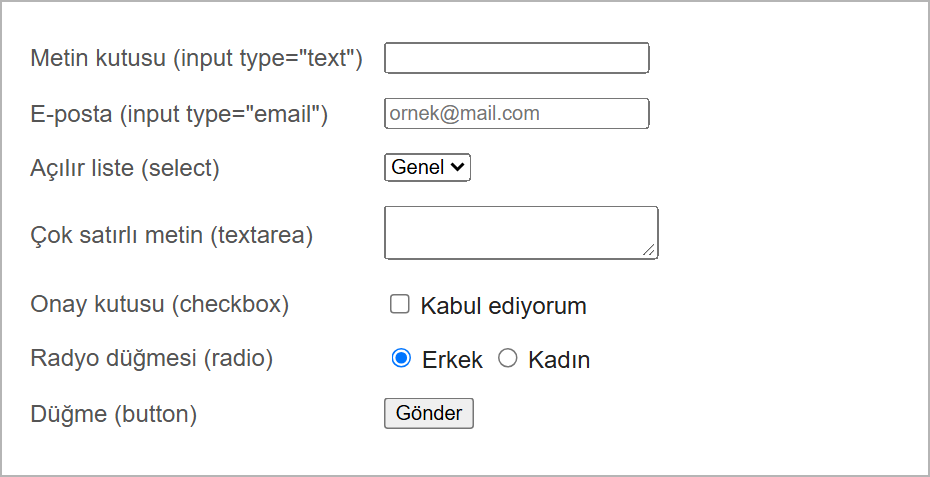
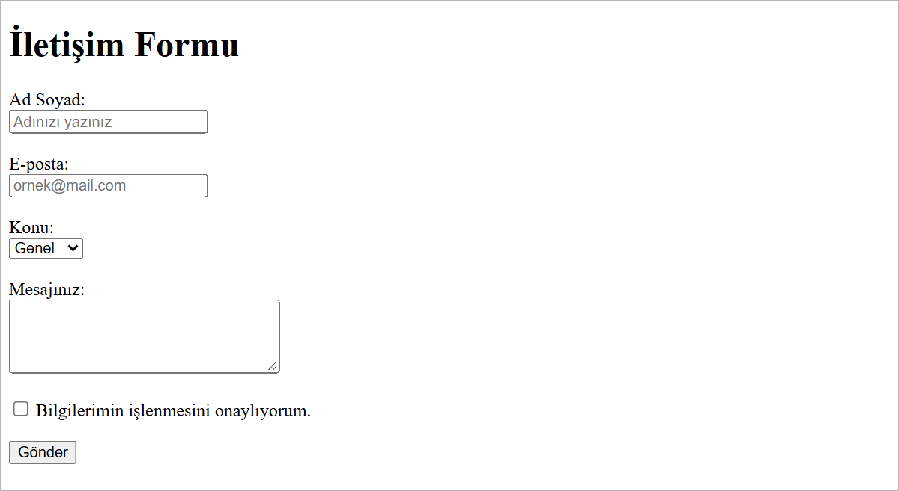

Formlar
Bu sayfada
Form, kullanıcının sayfaya bilgi girmesini sağlayan alanlardan oluşur: metin kutuları, açılır listeler, onay kutuları ve bir gönderme düğmesi. İletişim sayfaları, üyelik ekranları ve arama kutuları formlarla yapılır.
Formdaki bilgilerin işlenmesi (kaydedilmesi, e-posta ile gönderilmesi) için bir sunucu tarafı (backend) gerekir. Bu derste backend yoktur; bu yüzden "Gönder" düğmesine bastığınızda veri hiçbir yere kaydedilmez. Amacımız formu doğru kodlamak ve görünümünü oluşturmaktır; çalışması beklenmez.
1Form Nedir?
Tüm form ögeleri <form> ... </form> etiketleri arasında bulunur.
<form>
<!-- Form ögeleri (input, select, button ...) buraya yazılır -->
</form>
<form> etiketinin iki önemli özelliği vardır (backend olduğunda işe yararlar):
action→ verinin nereye gönderileceği (bir sunucu adresi).method→ nasıl gönderileceği:get(adres çubuğunda görünür, arama gibi) veyapost(adres çubuğunda görünmez, şifre gibi bilgiler için).
Bu derste backend olmadığı için action ve method yazmak zorunlu değildir; bunlar olmadan da form ögeleri sayfada görünür.
1.1. Gönderim Yöntemi: GET ve POST
Form gönderildiğinde veriler sunucuya iki farklı yöntemle iletilebilir. Yöntem, <form> etiketinin method özelliği ile belirlenir.
GET yöntemi: Veriler adresin (URL) sonuna eklenerek gönderilir; bu yüzden adres çubuğunda görünür. Az miktarda ve gizli olmayan veriler için uygundur; en yaygın örneği bir arama kutusudur.
<form action="arama.php" method="get">
<input type="text" name="arama" placeholder="Ara...">
<button type="submit">Ara</button>
</form>
Kullanıcı "kalem" yazıp gönderdiğinde adres şuna benzer olur: arama.php?arama=kalem. Girilen değer URL'de açıkça görülür.
POST yöntemi: Veriler adreste görünmez, isteğin gövdesinde gönderilir. Şifre gibi hassas veya çok miktarda veri için kullanılır. En yaygın örneği bir giriş (login) formudur.
<form action="giris.php" method="post">
<input type="password" name="sifre">
<button type="submit">Giriş Yap</button>
</form>
İki yöntemin karşılaştırması:
| Özellik | GET | POST |
|---|---|---|
| Veri nerede? | Adres çubuğunda (URL'de) görünür | Adreste görünmez |
| Güvenlik | Düşük (herkes görebilir) | Adreste görünmez; asıl koruma HTTPS ile sağlanır |
| Veri miktarı | Sınırlı | Fazla veri gönderilebilir |
| Tipik kullanım | Arama, filtreleme | Şifre, giriş, kayıt |
POST verileri gizlemez ya da şifrelemez; yalnızca adres çubuğunda göstermez. Verileri yolda koruyan, adresi https:// ile başlayan güvenli bağlantıdır (HTTPS).
GET ve POST'un asıl işini yapabilmesi için action ile belirtilen sunucu tarafı dosyanın (örneğin .php) çalışıyor olması gerekir. Bu derste backend olmadığından bu dosyalar yoktur; yöntemleri burada yalnızca kavram olarak görüyoruz.
2Form Ögeleri
En sık kullanılan form ögeleri tarayıcıda şöyle görünür:

2.1. Metin ve Diğer Girişler: <input>
<input> tek (kapanışsız) bir etikettir. Ne tür veri isteneceği type özelliği ile belirlenir:
type değeri | Ne için kullanılır |
|---|---|
text | Kısa metin (ad, şehir) |
email | E-posta adresi |
password | Şifre (noktalarla gizlenir) |
number | Sayı (yaş, adet) |
date | Tarih seçici |
tel | Telefon numarası |
checkbox | Onay kutusu (birden fazla seçilebilir) |
radio | Tek seçim (gruptan yalnızca biri) |
submit | Gönder düğmesi |
<input type="text" name="ad" placeholder="Adınızı yazınız">
name→ verinin adı (backend'de bu adla tanınır).placeholder→ alan boşken görünen soluk ipucu metni.
2.2. Etiket: <label>
<label>, bir form alanının adını ya da açıklamasını gösterir. for özelliği, etiketin hangi alana ait olduğunu belirtir; bu değer, ilgili alanın id'si ile aynı olmalıdır.
<label for="ad">Ad Soyad:</label> <input type="text" id="ad" name="ad">
for ile id eşleşince, etikete tıklamak ilgili alanı seçer (özellikle küçük onay kutularında kolaylık sağlar) ve görme engelli kullanıcılar için alan sesli okunur. Her alana bir <label> yazmak iyi bir alışkanlıktır.
2.3. Açılır Liste: <select> ve <option>
Hazır seçeneklerden birini seçtirmek için <select> kullanılır; her seçenek bir <option>'dır.
<select name="sehir">
<option>Adana</option>
<option>Ankara</option>
<option>İstanbul</option>
</select>
2.4. Çok Satırlı Metin: <textarea>
Uzun metinler (mesaj, açıklama) için <textarea> kullanılır. rows satır, cols sütun sayısını (yaklaşık boyut) belirtir.
<textarea name="mesaj" rows="4" cols="30"></textarea>
2.5. Onay Kutusu ve Radyo Düğmesi
- Onay kutusu (
checkbox): Birden fazla seçenek işaretlenebilir. - Radyo düğmesi (
radio): Bir gruptan yalnızca biri seçilir. Aynı gruba ait radyo düğmelerininnamedeğeri aynı olmalıdır.
<input type="radio" id="erkek" name="cinsiyet" value="erkek"> <label for="erkek">Erkek</label> <input type="radio" id="kadin" name="cinsiyet" value="kadin"> <label for="kadin">Kadın</label>
Radyo düğmelerine aynı name verilmezse hepsi ayrı ayrı seçilebilir ve "tek seçim" özelliği çalışmaz.
2.6. Düğmeler: <button>
type="submit"→ formu gönderir. Formdaactionyazılmazsa form aynı sayfaya gönderilir: sayfa yeniden açılır ve yazdıklarınız adres çubuğunda görünür.type="reset"→ formdaki tüm alanları temizler.
<button type="submit">Gönder</button> <button type="reset">Temizle</button>
3Örnek: İletişim Formu
Şimdi bu haftanın çıktısını hazırlayalım. Aşağıdaki formda ad, e-posta, konu (açılır liste) ve mesaj alanları ile bir onay kutusu vardır.
<!DOCTYPE html>
<html lang="tr">
<head>
<meta charset="utf-8">
<title>İletişim Formu</title>
</head>
<body>
<h1>İletişim Formu</h1>
<form>
<label for="ad">Ad Soyad:</label><br>
<input type="text" id="ad" name="ad" placeholder="Adınızı yazınız"><br><br>
<label for="eposta">E-posta:</label><br>
<input type="email" id="eposta" name="eposta" placeholder="ornek@mail.com"><br><br>
<label for="konu">Konu:</label><br>
<select id="konu" name="konu">
<option>Genel</option>
<option>Şikayet</option>
<option>Öneri</option>
</select><br><br>
<label for="mesaj">Mesajınız:</label><br>
<textarea id="mesaj" name="mesaj" rows="4" cols="30"></textarea><br><br>
<input type="checkbox" id="onay" name="onay">
<label for="onay">Bilgilerimin işlenmesini onaylıyorum.</label><br><br>
<button type="submit">Gönder</button>
</form>
</body>
</html>
Kaydedip Go Live ile açtığınızda tarayıcıda şu sonucu görürsünüz:

Formda action olmadığı için "Gönder" düğmesine bastığınızda form aynı sayfaya gönderilir: sayfa yeniden açılır ve yazdıklarınız adres çubuğunda görünür (?ad=Ali&...). Veri hiçbir yere kaydedilmez, çünkü arkada veriyi işleyen bir program (backend) yoktur.
4Sıkça Yapılan 5 Hata
| Hata | Sonuç | Çözüm |
|---|---|---|
<label for="..."> ile id'yi eşleştirmemek | Etikete tıklayınca alan seçilmez | for ve id değerlerini aynı yapın |
Radyo düğmelerine aynı name'i vermemek | Hepsi ayrı seçilir, tek seçim olmaz | Aynı gruptaki radyolara aynı name verin |
<select> içine <option> koymamak | Açılır liste boş görünür | Her seçenek için bir <option> ekleyin |
<textarea> etiketini kapatmamak | Sonraki bütün kodlar kutunun içinde yazı olarak görünür | <textarea> mutlaka </textarea> ile kapatılır |
Alanlara name vermemek | Alanın verisi hiç gönderilmez | Her form alanına name yazın |
5Bu Haftanın Özeti
- Tüm form ögeleri
<form>...</form>arasında bulunur;actionvemethodverinin nereye ve nasıl gideceğini belirtir (backend gerektirir). - GET verileri adres çubuğunda (URL'de) gösterir; az miktardaki, gizli olmayan veriler (arama) için kullanılır. POST verileri adres çubuğunda göstermez; hassas ya da çok veri (şifre, giriş) için kullanılır.
<input>tek etikettir;typeile türü belirlenir:text,email,password,number,date,checkbox,radio,submit...<label>, alanın adını gösterir;fordeğeri alanınid'si ile aynı olmalıdır.<select>/<option>açılır liste,<textarea>çok satırlı metin,<button>düğme oluşturur.- Radyo düğmelerinde aynı
nameile grup oluşturulur; gruptan yalnızca biri seçilir. - Bu derste backend yoktur; veri hiçbir yere kaydedilmez, amaç formun doğru kodlanıp görüntülenmesidir.
6Konu Sonu Testi
-
Tüm form ögeleri hangi etiketin içine yazılır?
- a)
<input> - b)
<form> - c)
<label> - d)
<body>
Cevabı göster
bTüm form ögeleri<form>içinde yer alır. - a)
-
Bir form alanının adını ya da açıklamasını yazmak için hangi etiket kullanılır?
- a)
<title> - b)
<option> - c)
<label> - d)
<p>
Cevabı göster
cAlan adını<label>gösterir;forile alana bağlanır. - a)
-
Hazır seçeneklerden birini seçtiren açılır liste hangi etikettir?
- a)
<ul> - b)
<select> - c)
<textarea> - d)
<input>
Cevabı göster
bAçılır liste<select>ile oluşturulur; seçenekler<option>'dır. - a)
-
Radyo düğmelerinin aynı gruba ait olması için hangi özelliği aynı olmalıdır?
- a)
id - b)
type - c)
name - d)
value
Cevabı göster
cAynı gruptaki radyo düğmelerininnamedeğeri aynı olmalıdır. - a)
-
Girilen verilerin adres çubuğunda görünmemesi istenen (şifre gibi hassas) durumlarda hangi gönderim yöntemi tercih edilir?
- a) GET
- b) POST
- c)
text - d)
label
Cevabı göster
bPOST verileri URL'de göstermez; GET ise adres çubuğunda açıkça gösterir.
7Kendinizi Deneyin
Cevabınızı önce kendiniz yazın (defterinize ya da VS Code'da bir dosyaya), sonra cevapla karşılaştırın. Kod okuma ve hata bulma sorularında cevabınızı tarayıcıda deneyerek de kontrol edebilirsiniz.
1. (Kavram) GET ve POST yöntemleri arasındaki farkı açıklayın. POST verileri gizler mi?
Cevabı göster
GET'te veriler adres çubuğunda görünür (?arama=kalem gibi); arama gibi gizli olmayan, az veri için kullanılır. POST'ta veriler adres çubuğunda görünmez; şifre gibi hassas ya da çok miktarda veri için kullanılır. POST verileri gizlemez veya şifrelemez, yalnızca adreste göstermez. Verileri yolda koruyan, https:// ile başlayan güvenli bağlantıdır.
2. (Kavram) <label> etiketindeki for özelliği ile <input> etiketindeki id özelliği neden aynı değeri taşımalıdır?
Cevabı göster
for ve id aynı olunca etiket o alana bağlanır. Etiket yazısına tıklandığında imleç ilgili alana gider, ekran okuyucular da alanın adını doğru okur. Değerler farklıysa bağlantı kurulmaz.
3. (Kod okuma) Aşağıdaki formda radyo düğmelerinden aynı anda kaç tanesi seçilebilir? İki radyo düğmesinin name değerleri farklı olsaydı ne olurdu? Onay kutusu için durum nedir?
<form>
<input type="radio" name="ogretim" value="1"> Birinci öğretim
<input type="radio" name="ogretim" value="2"> İkinci öğretim
<input type="checkbox" name="bulten"> Duyuruları almak istiyorum
</form>
Cevabı göster
Radyo düğmelerinin name değeri aynı olduğu için aynı gruptadırlar; aynı anda yalnızca biri seçilebilir. name değerleri farklı olsaydı ikisi birden seçilebilirdi. Onay kutusu (checkbox) diğerlerinden bağımsızdır; işaretlenip kaldırılabilir.
4. (Hata bulma) Aşağıdaki formda dört hata var. Bulun ve düzeltin.
<form method="get">
<label for="eposta">E-posta:</label>
<input type="text" id="mail">
<label for="sifre">Şifre:</label>
<input type="text" id="sifre" name="sifre">
<textarea name="mesaj">
<button type="submit">Gönder</button>
</form>
Cevabı göster
for="eposta"ileid="mail"eşleşmiyor; ayrıca alanınnameözelliği yok (veri gönderilmez) ve e-posta içintype="email"uygundur. Doğrusu:<input type="email" id="eposta" name="eposta">- Şifre alanı
type="text"; yazılanlar açıkça görünür. Doğrusu:type="password" - Şifre içeren form
getile gönderiliyor; şifre adres çubuğunda görünür. Doğrusu:<form method="post"> <textarea>kapatılmamış; düğme de dâhil sonraki her şey kutunun içinde yazı olarak görünür. Doğrusu:<textarea name="mesaj"></textarea>
5. (Kod yazma) "Bölüm" etiketli, içinde "Bilgisayar Programcılığı", "Bilgisayar Destekli Tasarım" ve "Grafik Tasarım" seçenekleri bulunan bir açılır liste ile "Gönder" düğmesi içeren formu yazın. Etiket listeye bağlı olmalıdır.
Cevabı göster
<form>
<label for="bolum">Bölüm:</label>
<select id="bolum" name="bolum">
<option>Bilgisayar Programcılığı</option>
<option>Bilgisayar Destekli Tasarım</option>
<option>Grafik Tasarım</option>
</select>
<button type="submit">Gönder</button>
</form>
8Uygulamalar
Görev: Basit bir üyelik formu hazırlayın. Ad, e-posta ve şifre alanları, cinsiyet için iki radyo düğmesi ve bir "Kayıt Ol" düğmesi bulunsun.
Çözüm:
<!DOCTYPE html>
<html lang="tr">
<head>
<meta charset="utf-8">
<title>Üyelik Formu</title>
</head>
<body>
<h1>Üyelik Formu</h1>
<form>
<label for="ad">Ad:</label><br>
<input type="text" id="ad" name="ad"><br><br>
<label for="eposta">E-posta:</label><br>
<input type="email" id="eposta" name="eposta"><br><br>
<label for="sifre">Şifre:</label><br>
<input type="password" id="sifre" name="sifre"><br><br>
<p>Cinsiyet:</p>
<input type="radio" id="erkek" name="cinsiyet" value="erkek">
<label for="erkek">Erkek</label>
<input type="radio" id="kadin" name="cinsiyet" value="kadin">
<label for="kadin">Kadın</label><br><br>
<button type="submit">Kayıt Ol</button>
</form>
</body>
</html>
Bu formda method yazılmadığı için form gönderildiğinde bütün veriler, şifre dahil, adres çubuğunda görünür. Gerçek sitelerde şifre alanı olan formlar method="post" ile gönderilir.
Adımlar:
web_sitemklasöründeuyelik.htmladında yeni bir dosya oluşturun.- Yukarıdaki kodu yazıp kaydedin (
Ctrl+S). - Go Live ile açın. İki radyo düğmesinden aynı anda yalnızca birinin seçilebildiğini gözlemleyin.
9Sınıf Uygulaması
Senaryo: Bir web sitesi için eksiksiz görünen bir iletişim formu sayfası hazırlayın (backend olmadığı için çalışması beklenmez, görünmesi yeterli).
Yapılacaklar:
web_sitemklasöründeiletisim_formu.htmladında yeni bir dosya oluşturun.- Bir
<form>içine şu alanları ekleyin: Ad (text), E-posta (email), Konu (<select>ile en az üç<option>), Mesaj (<textarea>). - Bir onay kutusu (
checkbox) ve yanına bir<label>ekleyin. - Formu bitiren bir Gönder düğmesi (
<button>) koyun. - Her alan için bir
<label>yazın vefor/iddeğerlerini eşleştirin.
Beklenen sonuç: Ad, e-posta, konu (açılır liste), mesaj, onay kutusu ve Gönder düğmesi içeren düzenli bir iletişim formu.
İpuçları: <label for="..."> ile alanın id'si aynı olmalı. <textarea>'yi </textarea> ile kapatmayı unutmayın.
10Notlar ve İpuçları
type="email"alanınaaligibi geçersiz bir adres yazıp "Gönder" düğmesine basarsanız tarayıcı formu göndermez.<label>'ınfordeğeri alanınid'si ile eşleşince etikete tıklamak alanı seçer ve ekran okuyucular etiketi sesli okur.
11Çalışma Soruları
Soruları web_sitem klasöründe açacağınız yeni bir .html dosyasında deneyin.
- Bir forma
type="text"vetype="email"alanları ekleyipplaceholderyazın. - Her alana bir
<label>ekleyipfor/iddeğerlerini eşleştirin. - Bir
<select>açılır listesi oluşturup üç<option>ekleyin. - Bir
<textarea>ekleyiprowsvecolsdeğerlerini değiştirerek boyutunu ayarlayın. type="checkbox"ile birden fazla seçenek,type="radio"ile tek seçimli bir grup oluşturun.<button type="reset">ekleyip forma yazdıklarınızı temizlediğini gözlemleyin.
Kaynakça
- MDN: Your first form (İngilizce)
- MDN: Sending form data (İngilizce)
Bu haftanın Sınıf Uygulaması sayfanın sonundadır. Önce konu anlatımını okuyun, sonra uygulamayı kendi bilgisayarınızda yapın.